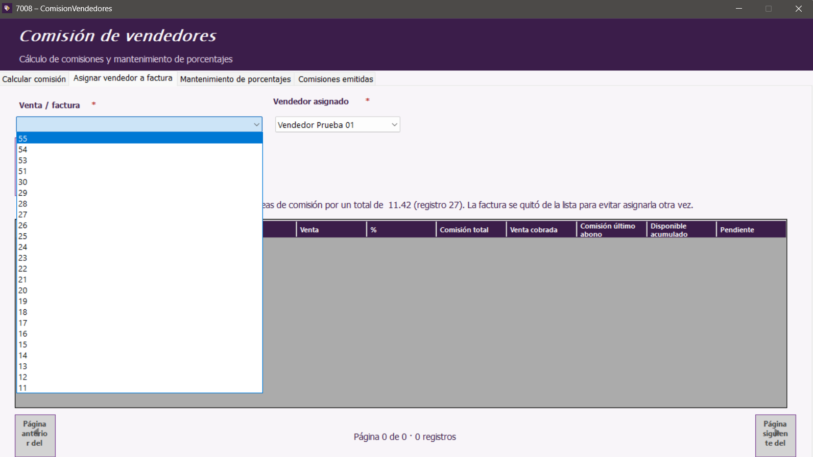
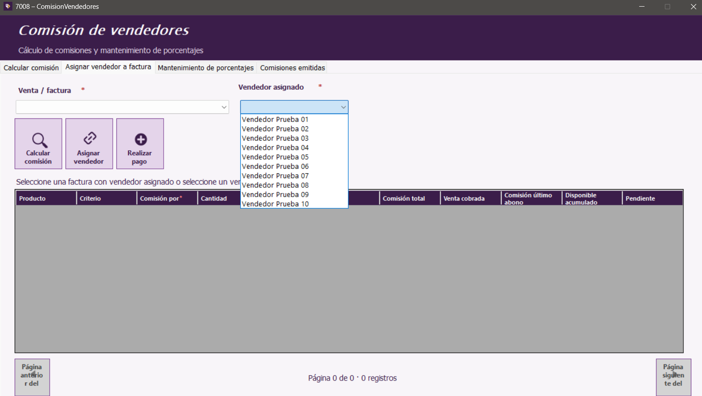
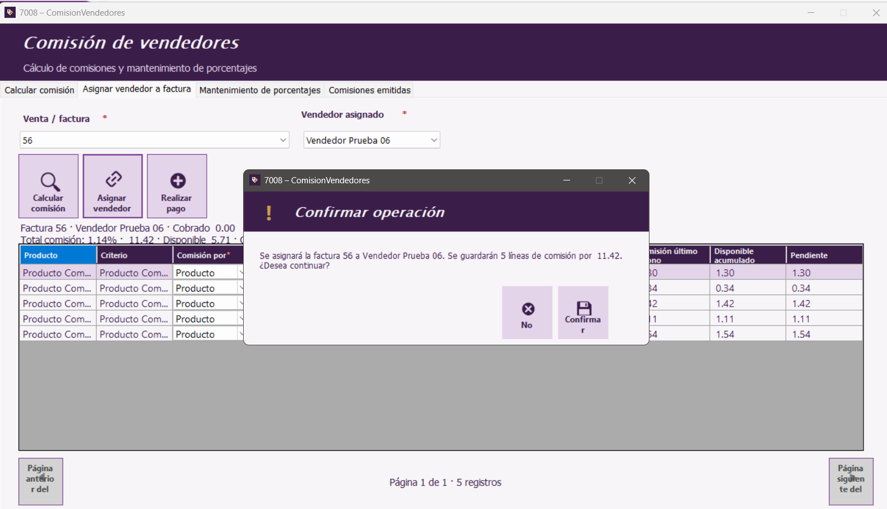
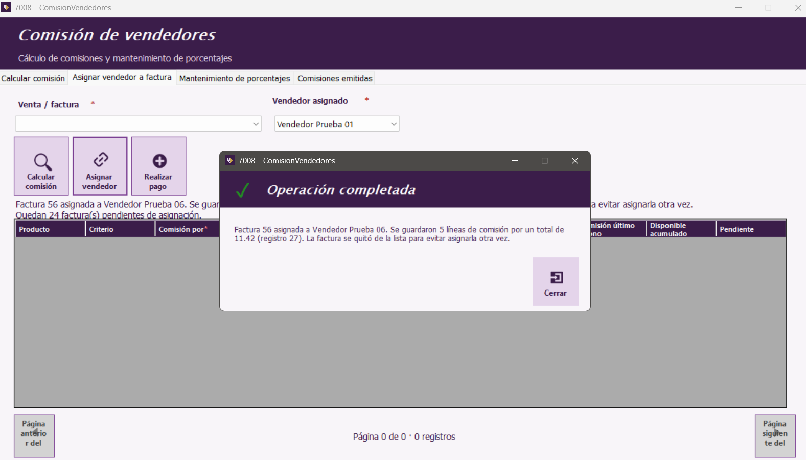

Inicio | Calcular comisión | Asignar vendedor a factura | Mantenimiento de porcentajes | Comisiones emitidas | Botones y mensajes
Seleccionar la factura y el vendedor
- Abre Asignar vendedor a factura.
- En Venta / factura, selecciona la factura que vas a asignar. La lista muestra las facturas disponibles.
- En Vendedor asignado, selecciona al vendedor correcto.
- Pulsa Calcular comisión para consultar las líneas y los importes calculados.
- Revisa el detalle y pulsa Asignar vendedor.
- Lee la confirmación. El mensaje indica la factura, el vendedor, las líneas y el total que se guardará. Elige No para cancelar o Confirmar para continuar.

Selecciona una factura disponible.

Selecciona el vendedor que quedará asignado.

Verifica el resumen y confirma únicamente si los datos son correctos.
Revisar el resultado
Al completarse la operación, el sistema informa cuántas líneas guardó y el total de comisión. La factura asignada se retira de la lista para evitar asignarla otra vez.

Mensaje mostrado después de guardar la asignación.
Detalle de comisión
La tabla presenta los productos y sus criterios de comisión. Revisa el método por producto y los valores de venta, porcentaje, comisión total, venta cobrada, comisión del último abono, disponible acumulado y pendiente.
Manual de usuario · Comisión de vendedores · Aplicación de Ventas y cuentas por cobrar